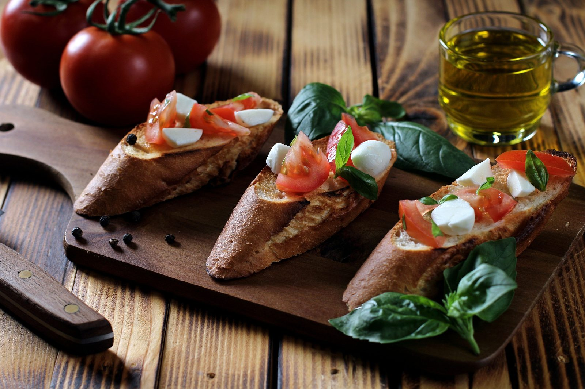

Средиземноморская диета неизменно признаётся лучшей диетой в мире учёными-диетологами. В отличие от большинства диет, она не была придумана нутрициологом — она возникла из наблюдения за пищевыми привычками населения Южной Европы (Греции, Италии, Испании), отличавшегося низкой частотой сердечно-сосудистых заболеваний и долголетием.
Что делает её особенной?
Вместо исключения групп продуктов или подсчёта калорий диета акцентирует качество питания. Это не жёсткий набор правил, а гибкая система вокруг цельных, минимально переработанных продуктов.
Что есть
Ежедневно (в изобилии)
- Овощи: Разнообразные — не менее 5 порций в день
- Фрукты: 2–3 порции в день
- Цельнозерновые: Хлеб, коричневый рис, паста, овсянка, киноа
- Бобовые: Чечевица, нут, фасоль — не менее 3 раз в неделю
- Орехи и семена: Миндаль, грецкий орех — небольшая горсть ежедневно
- Оливковое масло: Основной кулинарный жир — 2–4 ст.л. в день
Несколько раз в неделю
- Рыба и морепродукты: Особенно жирная рыба (лосось, сардины) — минимум 2 раза в неделю
- Птица: Курица и индейка
- Яйца: До 4–7 в неделю
- Молочные: Сыр и йогурт в умеренных количествах
Изредка
- Красное мясо: Не более 1–2 раз в неделю
- Сладкое: По особым случаям
Что говорит наука?
Сердечно-сосудистые заболевания
Исследование PREDIMED — одно из крупнейших нутрициологических испытаний — показало, что средиземноморская диета снижает риск серьёзных сердечно-сосудистых событий примерно на 30%. Доказательная база — сильнейшая среди всех диет.
Сахарный диабет 2 типа
Многочисленные рандомизированные исследования показывают улучшение чувствительности к инсулину, снижение уровня глюкозы натощак и HbA1c.
Здоровье мозга
Приверженность диете связана с более медленным снижением когнитивных функций и снижением риска болезни Альцгеймера.
Почему оливковое масло так важно?
Оливковое масло первого отжима богато олеокантал (противовоспалительный эффект, сравнимый с ибупрофеном) и олеиновой кислотой, улучшающей профиль ЛПНП холестерина.
Как перейти на средиземноморскую диету
- Неделя 1: Замените масло на оливковое. Добавьте овощи к каждому блюду.
- Неделя 2: Добавьте 2 рыбных блюда в неделю. Замените белый хлеб на цельнозерновой.
- Неделя 3: Бобовые 3 раза в неделю. Ежедневная горсть орехов.
- Неделя 4: Красное мясо не чаще раза в неделю. Замените десерты фруктами.